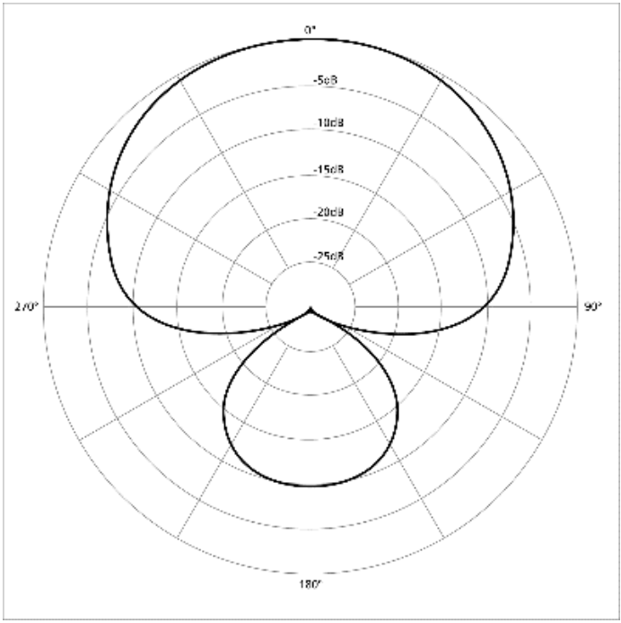

| Un micrófono con la siguiente característica polar genera 0.0002 V de tensión cuando recibe presión sonora de una fuente que emite 1 kHz con una dirección de 90º con respecto al eje del mismo. La fuente tiene una potencia de 40 W eléctricos, una eficiencia del 1%, y está situada a 7 metros.1.- ¿Cuál es la presión sonora eficaz (rms) recibida por el micrófono?2.- ¿Cuál es la sensibilidad del micrófono que aparecería en su especificación?3.- Si el micrófono genera una tensión 0.01 mV en completo silencio, ¿cuál es su nivel de Ruido de Entrada Equivalente (EIN)? |  |